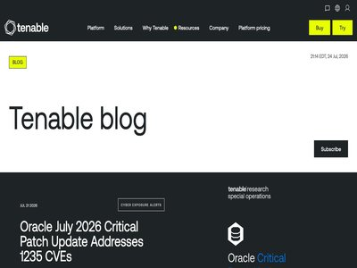
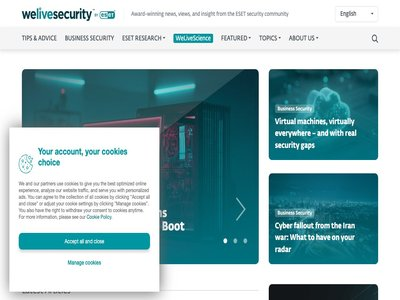

November 21, 2026 · 2 articles

Armory Castle Attack
November 21, 2026
What is the Attack? Google Threat Intelligence Group (GTIG) and Mandiant have disclosed new activity attributed to ARMORY CASTLE (formerly tracked as UNC5221), a suspected China... (FortiGuard Labs)

CTO of ‘RansomwareHelp’ Indicted for Wire Fraud
November 21, 2026
The chief technology officer and co-founder of ransomwarehelp.com, a six year old Florida business that claimed to use "advanced cryptographic tools" to restore data locked by r... (KrebsOnSecurity)
November 20, 2026 · 66 articles

CVE-2026-130901 - Improper limitation of a pathname to a restricted directory in Amazon awslabs.document-loader-mcp-server
November 20, 2026
Bulletin ID: 2026-195-AWS Publication Date: 11/20/2026 10:30 AM PST Description: Improper limitation of a pathname to a restricted directory in the file access checks in Amazon... (AWS Security Bulletins)

WhatsApp Patches 3 Security Flaws, Including Android Bug Suspected of Use in Scams
November 20, 2026
Meta-owned WhatsApp has addressed security vulnerabilities, including one impacting its Android app that it suspects may have been exploited in connection with scam messages. Th... (The Hacker News)

Chinese-nexus actor’s Cairn AI agents found a zero-day on their own
November 20, 2026
Amazon Threat Intelligence is sharing findings from an investigation into a Chinese-nexus threat actor using autonomous AI agents to conduct hacking operations with minimal huma... (AWS Security Blog)

Hackers use autonomous AI tool Cairn to find zero-day, take over server
November 20, 2026
Threat actors used the open-source AI penetration-testing framework Cairn to find a previously unknown vulnerability in a medical imaging application. [...] (BleepingComputer)

How to simplify cloud access with Unified Access Policies, now in preview
November 20, 2026
As organizations scale their cloud footprint to thousands of autonomous agents and microservices, you can accidentally create an operational bottleneck with strict Identity and... (Google Cloud Blog)
Bazuka Android Malware Uses Fake Screen Overlays to Hide Credential Theft and Device Control
November 20, 2026
Cybersecurity researchers have disclosed details of a previously unknown Android malware framework called Bazuka that offers large language model (LLM) integration for victim ma... (The Hacker News)

JPMorgan Confirms Customer Data Breach Following Third-Party Compromise
November 20, 2026
Ransomware actor N0n has claimed attacks on JPMorgan, Visa and Mastercard, reportedly leaking customer data on its dark web site (Infosecurity Magazine)
Vendor data breach exposes Chase, Visa, Mastercard customer info
November 20, 2026
J.P. Morgan Chase warned it suffered a data breach after a cyberattack at a third-party service provider exposed customers' personal information and marketing data. [...] (BleepingComputer)

Hackers Exploit Cisco Expressway Flaw CVE-2026-76466 to Breach Russian Organization
November 20, 2026
Cisco Expressway flaw CVE-2026-76466 is being exploited to gain root access and move from exposed devices into internal networks. Attackers have exploited a critical flaw, track... (Security Affairs)
Linux KVM Flaw CVE-2026-99312 Lets Guest VMs Access Host Memory on AMD Hosts
November 20, 2026
A flaw in KVM, the hypervisor built into the Linux kernel, let researchers read about 127 GB of a cloud server's memory from inside a virtual machine of their own on DigitalOcea... (The Hacker News)

Spy court blasts UK secrecy, forces government to admit Apple ‘backdoor’ demand
November 20, 2026
Notice's existence can be acknowledged without harming national security, but its precise demands remain under wraps (The Register - Security)

SBC Medical Group Data Breach Impacts Over 2 Million
November 20, 2026
Threat actors accessed databases containing customer information associated with clinics in Japan. The post SBC Medical Group Data Breach Impacts Over 2 Million appeared first o... (SecurityWeek)
European Commission Confirms AI-Assisted Cyberattack Disrupted Services
November 20, 2026
The Commission took certain services offline to contain the incident, but it has no evidence of a data breach. The post European Commission Confirms AI-Assisted Cyberattack Disr... (SecurityWeek)
Hunt.io Uncovers Russian-Speaking Credential Theft Operation Targeting US Banks and Government Accounts
November 20, 2026
Hunt.io uncovered a credential-stealing operation that compromised 603 PCs and exposed bank, government and password manager accounts. Hunt.io found an exposed open directory si... (Security Affairs)

It’s time to retire vanity security dashboards
November 20, 2026
In this Help Net Security video, Abdul Khadir Mahamed, OT Security Architect at Estée Lauder Companies, explains why security teams should retire vanity dashboards in IT and OT... (Help Net Security)
New Unpatched Windows 0-Day FastUnlock Lets Someone Holding a Locked PC Run Programs on It
November 20, 2026
A newly disclosed unpatched zero-day technique called FastUnlock lets someone with physical access to a locked Windows computer start programs without signing in. Whoever uses i... (The Hacker News)

Risky Bulletin: New Windows security feature will allow apps to refuse to run on insecure systems
November 20, 2026
In other news: Hackers hit the EU's HR platform; Ubuntu to let AI fix patches in Edge releases; a ton of branded vulnerabilities. (Risky Business News)
VMware patches vCenter zero-day exploited in attacks since September
November 20, 2026
Broadcom has released security updates to fix a critical VMware vCenter Server authentication bypass vulnerability that Chinese-linked hackers have exploited in zero-day attacks... (BleepingComputer)
Scope down permissions of existing sessions using AWS STS GetScopedCredentials
November 20, 2026
When you build AI agents, you often want each agent or sub-agent to have only the permissions its tasks require, rather than the full permissions of the session that started it.... (AWS Security Blog)

Friday Squid Blogging: The Largest Squid Ever Filmed
November 20, 2026
This is the story of the largest squid ever filmed, in December 2006 near Japan’s Ogasawara Islands. As usual, you can also use this squid post to talk about the security storie... (Schneier on Security)

Dialing for Data: Inside the Com’s High-Profile Heists
November 20, 2026
Our analysis of Com affiliate vishing attacks, cloud data theft and extortion campaigns targeting healthcare and finance, with actionable defense guidance. The post Dialing for... (Palo Alto Networks Unit 42)

West Virginia Legislature hit with cyber incident affecting IT systems
November 20, 2026
A cybersecurity incident that began Thursday was still ongoing Friday in the West Virginia Legislature. A spokesperson said the disruption did not spread to other government ent... (The Record)
Signal slams door on prying AI agents to protect privacy
November 20, 2026
Apple, Google, and Microsoft called out for failing to provide developers with adequate AI agent controls (The Register - Security)
US companies’ use of Chinese open weight AI draws rebuke from House chairmen
November 20, 2026
An investigation led by the House Homeland Security Committee focused on the dangers of U.S. companies using lower-cost open weight AI models for certain projects. (The Record)

How Cloudflare WAF protects against ruby2shell (CVE-2026-132825)
November 20, 2026
ruby2shell lets attackers corrupt memory in default Rails and Sinatra apps without logging in. Cloudflare WAF blocks it for every customer, including Free plans. Upgrade Ruby no... (Cloudflare Blog)
How Cloudflare WAF helps protect against phpAfterShell and other critical PHP flaws
November 20, 2026
phpAfterShell is a critical flaw in PHP's default session handler that can lead to code execution. Cloudflare WAF blocks it for all customers, including Free plans, and adds new... (Cloudflare Blog)
Signal blocks Apple, Google AI screenshotting in response to ‘existential threat’ to privacy app
November 20, 2026
The encrypted messaging app will now block those screenshots by default, following similar steps it took with Microsoft last year. The post Signal blocks Apple, Google AI screen... (CyberScoop)
Container Store restores systems after cyberattack
November 20, 2026
The firm’s parent company, Neighborhood Intelligence, said in a statement that The Container Store has “restored its website and systems following a cybersecurity incident this... (The Record)
Bell Canada says 'agentic' hacker stole enterprise customer data
November 20, 2026
Bell Canada has confirmed that an "agentic" threat actor breached its systems on November 17, 2026, and stole enterprise customer data, including information from a system used... (BleepingComputer)

In Security, Words Matter as Much as Tools, Maybe More
November 20, 2026
From talking cloud security to using AI, cyber leaders are finding that clear, disciplined communication is now a front-line defense capability across the enterprise. (Dark Reading)
China attackers deployed AI agents that autonomously found and exploited a 0-day to take over a university server
November 20, 2026
'Agents kept adapting for nearly a full day without human direction,' Amazon CISO said (The Register - Security)

A Technical Guide to Mitigate Java4Shell with TruRisk Eliminate
November 20, 2026
Executive Summary Java4Shell (CVE-2026-114938) is a heap out-of-bounds write in HotSpot’s AVX-512 Base64 decoder on x86-64. Calif reported it and showed pre-auth RCE in Keycloak... (Qualys Blog)
What We Missed: Nvidia CEO Scandal Rocks AI Industry
November 20, 2026
In this video, Dark Reading editors discuss some of the news they didn't get a chance to cover, from Jensen Huang's resignation from Nvidia to Microsoft's recent cloud outage. (Dark Reading)
How Spanner Graph detects ads fraud and abuse at Google at multi-billion node scale
November 20, 2026
Ever wonder how the Google Ads team keeps the massive system stable and online, despite continuous attempts by hackers to take it down? Part of the answer is using Spanner as it... (Google Cloud Blog)

Microsoft named a Leader in the 2026 Gartner® Magic Quadrant™ for SIEM
November 20, 2026
We're honored that Microsoft has once again been recognized as a Leader in the 2026 Gartner® Magic Quadrant™ for Security Information and Event Management (SIEM). The post Micro... (Microsoft Security Blog)
Dutch data watchdog highlights safety issues with AI glasses
November 20, 2026
Devices found to misinterpret medication instructions and other scenarios impacting human safety (The Register - Security)

Mapping the AI threat landscape: MITRE ATLAS comes to Elastic Security
November 20, 2026
Elastic Security 9.6 adds MITRE ATLAS to our detection rules and the tools you use to manage them, so you can see which AI attacks your rules already cover. (Elastic Security Labs)
In Other News: Norwegian Energy Firm Cyberattacks, Supercomputer Hack, New Nightmare Eclipse Exploit
November 20, 2026
Noteworthy stories that might have slipped under the radar: EU adds NoName057(16) to cyber sanctions list, malware targets CACs left in personal computers, Gemini agents targete... (SecurityWeek)
Dozens of credit unions hit by supplier breach that went unnoticed for six weeks
November 20, 2026
Ireland’s Data Protection Commission told Recorded Future News on Thursday it had received more than 40 breach notifications from credit unions that used the Belfast-based compa... (The Record)
Ransomware Recovery Takes 20 Days for the Typical Victim, Report Finds
November 20, 2026
A new Rubrik report has shown that ransomware victims face 20-day median recovery time, with 28% of recovery cases taking longer than six weeks (Infosecurity Magazine)

How exposure management can help public sector prepare for PHP2Shell-like vulnerabilities
November 20, 2026
PHP2Shell showed how fast a runtime-level flaw can go from disclosure to confirmed exploitation. Here’s how federal, state, local, and education teams can prepare for PHP2Shell-... (Tenable Blog)

US launches center to disrupt scams and warn victims sooner
November 20, 2026
The US Homeland Security Task Force launched the Threat Disruption Center to target the crime networks behind scams and sextortion. (Malwarebytes Labs)
N-able says recent security breach led to major service outage
November 20, 2026
N-able says attackers who breached one of its servers have caused a major outage affecting Mail Assure and SpamExperts Hosted Cloud services worldwide. [...] (BleepingComputer)
Industry Reactions to Major Outages and AI Patching Debate: Feedback Friday
November 20, 2026
Experts commented on whether AI-accelerated patching played a role, the need for tested rollback plans, and the fragility of interconnected systems. The post Industry Reactions... (SecurityWeek)
Opening a 400-Year-Old Cryptex
November 20, 2026
Researchers used CT scanning technology to recover the code and open a 400-year-old cryptex padlock. You can buy a USB-drive cryptex . (Schneier on Security)
The Path to AI Autonomy in the SOC
November 20, 2026
Security leaders are about to hand AI agents a lot more authority. In a recent a16z survey of CISOs at organizations with more than 1,000 employees, 36% said they are comfortabl... (The Hacker News)

CISA Adds Four Known Exploited Vulnerabilities to Catalog
November 20, 2026
CISA has added four new vulnerabilities to its Known Exploited Vulnerabilities (KEV) Catalog , based on evidence of active exploitation. CVE-2025-42884 SAP NetWeaver Improper Ne... (CISA Current Activity)
Mail Bombing Attacks Fuel IT Helpdesk Impersonation Scams
November 20, 2026
Researchers have uncovered a large-scale campaign in which attackers flood inboxes with emails before impersonating IT helpdesk staff to gain access to user accounts (Infosecurity Magazine)
F5 releases emergency patches for critical BIG-IP RCE flaws
November 20, 2026
US cybersecurity company F5 warned customers to patch five critical BIG-IP vulnerabilities that attackers can exploit to trigger denial-of-service (DoS) or gain remote code exec... (BleepingComputer)
SonicWall Warns Gen 6 Firewalls Won't Get Security Patches, Even for Critical Flaws
November 20, 2026
SonicWall has urged all customers still running Generation 6 firewalls to retire and replace them immediately and stop exposing the devices on the internet edge, citing security... (The Hacker News)
Ruby Patches Ruby2Shell Vulnerability That Could Lead to RCE
November 20, 2026
Tracked as CVE-2026-132825, the bug is a heap-based buffer overflow that could lead to remote code execution (RCE). The post Ruby Patches Ruby2Shell Vulnerability That Could Lea... (SecurityWeek)

Metasploit Wrap Up: Breaking Zimbra's Identity Boundaries
November 20, 2026
This release we have three pull requests from jburgess-r7 building out coverage for the identity-boundary issues detailed in Rapid7's Breaking Zimbra Identity Boundaries, Part O... (Rapid7 Blog)
265,000 Oyster photocard customers’ data exposed in Transport for London breach
November 20, 2026
Account details belonging to some 265,000 Oyster photocard holders may have been compromised in a breach of the photocard website, Transport for London (TfL) has warned. They in... (Help Net Security)

React2STEAL: Hijacked GitHub Accounts Exploit React2Shell and Publish Stolen Secrets
November 20, 2026
React2STEAL uses GitHub Actions in hijacked accounts to exploit React2Shell (CVE-2025-55182) on Next.js servers, then commits stolen environment variables, cloud keys, and AI AP... (GitGuardian Blog)
ROMULUS ClickFix Attacks Deliver RAT That Can Spy on Users and Control PCs
November 20, 2026
Threat actors have been observed using the ROMULUS ClickFix malware delivery platform to deliver a previously undocumented remote access trojan (RAT) that shares similarities wi... (The Hacker News)
Your AI red team may be finding the same prompt injection thousands of times
November 20, 2026
AI agents retrained on a bigger pile of prompt injection attacks came out easier to hijack in three of four tests run by researchers at the University of Waterloo, Zhejiang Univ... (Help Net Security)
AI agent API security hasn’t caught up with agents already running in production
November 20, 2026
Postman asked nearly 9,000 developers, architects and executives how they’re handling AI agents, and the answers tell a familiar story. Companies put the new thing to work first... (Help Net Security)
Most CIOs and CISOs expect to contain attacks, though few can reach their gear right away
November 20, 2026
Most organizations can’t quickly get secure management access to their own critical network infrastructure once the primary network goes down. Opengear surveyed 514 CIOs and CIS... (Help Net Security)

ISC Stormcast For Friday, November 20th, 2026 (Fri, Nov 20th)
November 20, 2026
(SANS ISC)
nginx2root: Five new nginx vulnerabilities, and how Cloudflare protects origins from the worst of them
November 20, 2026
Five memory corruption bugs in nginx, called nginx2root, can let an unauthenticated attacker run code on a server. Here’s how they work, and why origins behind Cloudflare's prox... (Cloudflare Blog)
Java4Shell
November 20, 2026
What is the Vulnerability? CVE-2026-114938, known as Java4Shell, is a critical heap-based buffer overflow vulnerability in the Base64 implementation of the Java standard library... (FortiGuard Labs)

NVIDIA Investigates Ransomware Claim; Parts Supplier Was Listed Six Weeks Earlier
November 20, 2026
The Gentlemen ransomware group listed NVIDIA on its leak site on November 18 without providing any evidence of stolen data. NVIDIA is investigating a possible impact on a third-... (Joho no Todai)
Sean Cairncross out as national cyber director
November 20, 2026
During his tenure, he was involved in key administration decisions on AI security and the protection of critical infrastructure. The post Sean Cairncross out as national cyber d... (CyberScoop)
Cisco Lists 22 Products Affected by Java4Shell; IOS XE and UCS Central Not Affected
November 20, 2026
Cisco has revised its product impact assessment for the OpenJDK vulnerability Java4Shell (CVE-2026-114938). IOS XE, which powers routers and switches, is not affected, while 22... (Joho no Todai)

Who's accountable when the worker is an agent?
November 20, 2026
If something goes wrong with your work, you know you're accountable. But what takes the place of accountability when an AI agent is doing the work? (Sysdig Blog)

AI Joins the Industrial Attack Workflow
November 20, 2026
Insikt Group analyzes how GreenJuliett and AI frameworks like ARTEX are accelerating cyberattacks on OT networks. (Recorded Future)
November 19, 2026 · 52 articles
Critical PHP Flaws Allow Code Execution, but Don't Panic 'PHP2Shell'-Style
November 19, 2026
November's monthly security release patches seven critical PHP flaws that should be addressed ASAP, though experts say exploitability varies and depends heavily on configuration. (Dark Reading)
The Fireworks AI Breach: How One Vendor Key Became a Supply Chain Attack on Cursor
November 19, 2026
A breach at Fireworks AI exposed a read-only key Cursor had issued to it. The attacker used it to copy agent traces, found more credentials inside, and planted trojanized Claude... (GitGuardian Blog)
phpAfterShell Explained: How Hackers Could Turn a PHP Session Flaw Into Code Execution
November 19, 2026
PHP's default file-based session storage can be made to return objects an attacker chose, by cutting off a session write at the right moment. When combined with a second weaknes... (The Hacker News)
What Is Preemptive MDR? A Guide For Security Leaders
November 19, 2026
When an MDR provider contains a compromised endpoint, your team needs to know whether the weakness that enabled the attack exists elsewhere and who is responsible for addressing... (Rapid7 Blog)
PHP Releases Patches to Fix 18 Vulnerabilities
November 19, 2026
PHP has released security updates addressing 18 vulnerabilities, including critical remote code execution flaws affecting session handling (Infosecurity Magazine)
Critical NGINX ‘NGINX2Root’ bugs let attackers hijack servers
November 19, 2026
Two critical NGINX vulnerabilities dubbed "nginx2root" allow unauthenticated attackers to execute code remotely on vulnerable web servers, with researchers demonstrating how the... (BleepingComputer)
Drupal Patches Critical Installer Flaw That Could Give Unauthenticated Attackers Control of Sites
November 19, 2026
Under specific conditions, a critical vulnerability in Drupal core can allow an attacker without login credentials to use the built-in installer to attempt to reinstall a site.... (The Hacker News)

CVE-2026-114938: OpenJDK Base64 Decoder Vulnerable To Pre-Authentication RCE (Java4Shell)
November 19, 2026
IntroductionOn November 17, 2026, security researchers from Calif.io publicly disclosed Java4Shell (CVE-2026-114938, CVSS v4.0: 9.2 Critical), a severe heap memory-corruption vu... (Zscaler ThreatLabz)
Treat Your Honeypot Analysis Like Code: Git, Pull Requests and a Human Gate for AI [Guest Diary], (Wed, Nov 18th)
November 19, 2026
[This is a Guest Diary by Kevin Truong, an ISC intern as part of the SANS.edu BACS program] (SANS ISC)
Attackers Exploit Optimizely Flaw To Inject Malicious JavaScript
November 19, 2026
IntroductionOn November 16, 2026, an attacker exploited a vulnerability in Optimizely's Web Experimentation account signup flow. Optimizely is a platform used to create, manage,... (Zscaler ThreatLabz)
Ruby Ships Fixes for 7 Flaws, Including Critical Ruby2Shell, Said to Hit Default Rails Apps Pre-Auth
November 19, 2026
Ruby contains seven memory-safety flaws in its regular expression engine and its string case-conversion code. For five of them, its maintainers say, proof-of-concept exploits, o... (The Hacker News)

My IoT devices are no longer supported - is my smart home safe?
November 19, 2026
End-of-life smart devices can be a security risk if left unmanaged - here’s what to do instead (ESET WeLiveSecurity)
Critical Apache Roller, Axis Vulnerabilities Exploited in Attacks
November 19, 2026
Attackers are targeting Confluence Data Center through an Axis flaw and Apache is warning of attacks against Roller. The post Critical Apache Roller, Axis Vulnerabilities Exploi... (SecurityWeek)
Android developer verification will reach every install source, with a side door for power users
November 19, 2026
Google will extend Android developer verification to every country starting in January 2027, a check that already applies at participating app stores in four countries. Develope... (Help Net Security)
Qwen Incidents Show Self-Hosted AI Models Need Stronger Steering
November 19, 2026
Companies deploying AI agents have the illusion of control, but several incidents demonstrate that businesses need to be ready to enforce directions. (Dark Reading)
Your AWS Security, Identity, and Governance guide to re:Invent 2026
November 19, 2026
The AWS Security, Identity, and Governance team invites you to join us at re:Invent in Las Vegas from November 30 to December 4, 2026. You know all too well that AI agents now a... (AWS Security Blog)
Critical Synology Vulnerability CVE-2026-120382 Affects End-of-Life DSM 6.2, Which Is Missing From Official Fix List
November 19, 2026
Synology advisory SA-26:21 describes DSM 6.2 as affected by a CVSS 9.8 vulnerability, but DSM 6.2 is absent from the fix table and its release history contains no patched versio... (Joho no Todai)
Chaotic Eclipse Releases FastUnlock, a New Windows Zero-Day Vulnerability
November 19, 2026
The researcher Chaotic Eclipse released FastUnlock, a new Windows zero-day vulnerability exploiting Narrator to bypass the lock screen. Security researcher Chaotic Eclipse, also... (Security Affairs)
Debian APT to Retire Three Legacy Repository Formats: Security Takes Priority Over Compatibility as AI Research Advances
November 19, 2026
APT's maintainer has announced the removal of three legacy repository formats. Following a recent APT vulnerability and advances in AI security research, the project concluded t... (Joho no Todai)
Lawmakers launch new AI safety caucus amid rising security concerns
November 19, 2026
Seven of 26 founding members of the caucus are Republicans, a notable number given the White House’s steadfast opposition to regulating AI. (The Record)
Introducing the new AWS WAF security analytics dashboard
November 19, 2026
When blocked requests spike or a customer reports being locked out, a security team has to work out what is happening, where it is happening, and if AWS WAF is making the right... (AWS Security Blog)
Second Norwegian Energy Company Breached in Two Days
November 19, 2026
No specific link has been drawn between the two incidents, though they certainly sing the same notes. (Dark Reading)
Navigating Vulnerability Hysteria in the AI Era
November 19, 2026
This installment of the Reporters' Notebook video series examines the fallout from recent high-severity flaw disclosures, exploring how fears of AI-assisted exploits trigger wid... (Dark Reading)
ThreatsDay: GPT-6.2 Jailbreak Flaws, BubbleLoader PNG Malware, $500M Ransom Demands + 17 More Stories
November 19, 2026
The easiest way to fool someone is to give them something they already expect. A job offer. A message about a service outage. A familiar app. Nothing looks strange at first. And... (The Hacker News)

RMM Alerts at 2 AM: An MSP and SOC Incident Response Story
November 19, 2026
One compromised account, two rogue ScreenConnect deployments, and $3M in downtime. See how TruePath IT and the Huntress SOC handled RMM alerts at 2am. (Huntress Blog)

Why the Harness Matters: Early Lessons From the Evo Code Scanning Agent Preview
November 19, 2026
In early tests, Evo Code Scanning Agent’s security harness found more known vulnerabilities than Claude Security and Codex Security at the same compute budget, with lower precis... (Snyk Blog)
How AWS Security Incident Response triages your security findings
November 19, 2026
AWS Security Incident Response continuously triages the threat findings from Amazon GuardDuty and AWS Security Hub CSPM, but most of that work never shows up as a case. If cases... (AWS Security Blog)

The internet needs a nap (and you do, too)
November 19, 2026
Bill takes a break from the non-stop breaking news to promote prioritizing environmental awareness and team stability over reactive patching. (Cisco Talos)
Nvidia adds possible hack to list of very bad things under investigation
November 19, 2026
Ransomware group sets a deadline for the chipmaker to pay up - or see its data leaked (The Register - Security)
Deepfake Elon Musk nearly costs viewers $4.7 million in crypto
November 19, 2026
Coinbase says it blocked $4.7 million in attempted payments to an Elon Musk deepfake scam. (Malwarebytes Labs)
DOJ, DHS partner on new unit tackling scams and cybercrime
November 19, 2026
The departments are partnering on the Threat Disruption Center to better triage victim complaints, map cybercriminal networks and provide a direct channel to private sector orga... (The Record)
PHP Patches Seven Critical RCE Vulnerabilities
November 19, 2026
Successful exploitation could allow attackers to crash the worker process and execute code with the PHP worker’s privileges. The post PHP Patches Seven Critical RCE Vulnerabilit... (SecurityWeek)
PHP 8.6 is out, and here’s what changes for your code
November 19, 2026
PHP 8.6 has been released. The new version adds partial function application, a Time\Duration class, a polling API for event loops and a clamp() function. PHP 8.6 also changes d... (Help Net Security)
Spying on Governments with Zero Lines of Malware: A Custom SoftEther Bridge in Webworm’s Toolkit
November 19, 2026
Introduction For a threat actor, the perfect malware is one they don’t have to write, and already does all they need. One example of this is shown by the China-aligned APT known... (Rapid7 Blog)
Five warning signs of ransomware breach before encryption or data theft
November 19, 2026
Ransomware attacks often involve credential theft, lateral movement, and attempts to disable security controls long before encryption begins. Acronis examines five warning signs... (BleepingComputer)
Russian spies turn one cloud breach into a stepping stone for the next
November 19, 2026
A Russian cyberespionage group is posing as employees of organizations it has already breached to phish new targets, Google Threat Intelligence Group (GTIG) found. Google tracks... (Help Net Security)
Internet traffic and attacks during the 2026 U.S. midterm elections
November 19, 2026
On November 3, 2026 U.S. voters headed to the polls. Here’s what Cloudflare data across more than 1,400 protected sites tells us about Election Day Internet traffic and cyberatt... (Cloudflare Blog)
Why Holiday Security Can't Wait for Black Friday
November 19, 2026
Bot-driven fraud and holiday social engineering attacks stretch across many weeks, straining security teams and small businesses alike. (Dark Reading)
Ukraine exposes ransomware network extorting US oil, healthcare firms
November 19, 2026
Ukrainian authorities arrested four suspected members of an international ransomware network accused of extorting more than $40 million from companies around the world. (The Record)
30 Years of Gatekeeper Asymmetry Doom: The Paradox that Makes Powerful LLMs More Vulnerable
November 19, 2026
Abstract We give an exposition for a principle of gatekeeper asymmetry doom in information security, which states that “If the system vetting adversarial input has strictly less... (Check Point Research)
Credential stealer slipped into Microsoft’s official Python agent framework
November 19, 2026
Two releases of Microsoft’s official agent-framework package on the Python Package Index (PyPI) carried code that steals cloud and CI/CD credentials from developers’ systems. Ag... (Help Net Security)
Chrome patches six critical flaws, two found with AI’s help
November 19, 2026
Chrome 158 fixes 204 security issues, including six critical flaws. Here’s what to update. (Malwarebytes Labs)
StepSecurity Secures $20 Million to Expand Supply Chain Protection
November 19, 2026
The company will use the funds to accelerate the development and distribution of its security platform. The post StepSecurity Secures $20 Million to Expand Supply Chain Protecti... (SecurityWeek)
The Governance Gap in Open-Weight AI and What to Do About It
November 19, 2026
Lower costs, data privacy, and greater control are driving open-weight AI adoption, but many organizations are not addressing the risks that come with it. The post The Governanc... (SecurityWeek)
Financial Services Cybersecurity vs. ARTEX: Credentials in Plain Sight
November 19, 2026
Microsoft says Storm-3358 has used ARTEX against financial institutions since October 2026. GitGuardian found secrets in 6.9% of active finance-linked public GitHub repositories... (GitGuardian Blog)
Microsoft tests new Edge Lockdown Mode that disables GPU APIs
November 19, 2026
Microsoft is developing a new Edge security feature to reduce the attack surface by disabling the WebGL, WebGL2, and WebGPU APIs. [...] (BleepingComputer)
BackBox Linux 10 brings new hacking tools and Ubuntu 26.04 support
November 19, 2026
BackBox Linux is a free, open source penetration testing distribution made by BackBox, a non-profit community project that keeps its own repositories of ethical hacking tools. O... (Help Net Security)
TfL takes Oyster photocard website offline after attackers compromise customer accounts
November 19, 2026
Around 265,000 customers potentially affected as London transport operator grapples with another security breach (The Register - Security)
Rubrik Configuration Resilience rolls back unauthorized Microsoft 365 changes
November 19, 2026
Rubrik announced Configuration Resilience for Microsoft 365, a new offering that protects the key settings governing Microsoft applications such as Microsoft 365, Purview and De... (Help Net Security)
Splunk Patches Nearly 140 Flaws Across Three Core Products
November 19, 2026
The security updates resolve critical and high-severity issues leading to authentication bypass, remote code execution, and privilege escalation. The post Splunk Patches Nearly... (SecurityWeek)
Microsoft confirms app installation, launch issues after hotpatch
November 19, 2026
Microsoft has shared a workaround for installation and launch issues affecting Office and third-party applications after installing this month's Windows 11 hotpatch. [...] (BleepingComputer)
A Fifth of UK Employees Share Passwords with AI
November 19, 2026
Dashlane research reveals UK workers are sharing passwords with AI tools and granting access to sensitive data, raising major enterprise security concerns (Infosecurity Magazine)